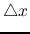
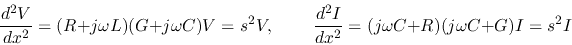
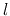
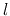
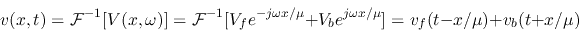
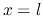
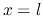

Next: Reflection and termination
Up: transmission_line
Previous: transmission_line
As shown in the figure, a transmission line can be modeled by its
resistance and inductance in series, and the conductance and capacitance
in parallel, all distributed along its length in direction. Here  ,
,
 , and
, and  represent, respectively, the resistance, inductance,
conductance, and capacitance per unit length
(
).
represent, respectively, the resistance, inductance,
conductance, and capacitance per unit length
(
).
The voltage and current along the transmission line are
functions of both time variable and space variable . Across an
infinitesimal section  along the line, the voltage and current
changes are
Dividing both sides of these equations by and let
we get the telegrapher's equations:
These coupled partial differential equations (PDEs) of two variables and
, called the telegrapher's equations, can be more conveniently solved by
the Fourier transform method. We denote the Fourier transforms of the voltage
and current with respect of ( treated as a parameter) as
For convenience we may sometimes denote the voltage  and current
in the Fourier domain as and or simply
and current
in the Fourier domain as and or simply  and
and  .
Taking the Fourier transform on both sides of the two PDEs we get two ordinary
differential equations (ODEs) with respect to a single variable :
.
Taking the Fourier transform on both sides of the two PDEs we get two ordinary
differential equations (ODEs) with respect to a single variable :
These ODEs can also be obtained when both voltage and current
are represented respectively as phasors and , and the transmission
line is represented in terms of the impedances , ,  , and
. Therefore the variables and in the ODEs can be
considered as either the Fourier transform or the phasor representations of
the voltage and current .
, and
. Therefore the variables and in the ODEs can be
considered as either the Fourier transform or the phasor representations of
the voltage and current .
Combining the two equations we get

where we have defined
with
and
The solutions of these two second order ODEs can be found to be:
where we have defined
Here and are the two particular solutions, weighted by
the arbitrary constants  and
and  , which are to be determined based
on the boundary conditions
at the front and
at the back end of the transmission line of length
. Note that and are constants with respect to variable ,
but in time domain, they are still functions of variable . Constant
and
, which are to be determined based
on the boundary conditions
at the front and
at the back end of the transmission line of length
. Note that and are constants with respect to variable ,
but in time domain, they are still functions of variable . Constant
and  can be found the same way.
can be found the same way.
Substituting
into the equation
and solving for , we get
where
is the characteristic impedance of the transmission line measured in ohm.
Comparing the two expressions of above, we see that
Lossless transmission line
When the frequency  is high,
is high,  and are much
greater than and , we can assume the transmission line is loss-less
with . In this case the two ODEs above become
and are much
greater than and , we can assume the transmission line is loss-less
with . In this case the two ODEs above become
and we also have
where the transmission speed (measued in meter/second) defined as
and
The voltage and current in time domain can be obtained as the inverse Fourier
transforms of
and
:

and
where
Both and are composed of two components traveling at velocity
in opposite directions along the transmission line. The time for the wave
to travel the whole length of the transmission line is . At the
front ( ) and back () ends of the line we have
) and back () ends of the line we have
i.e., the coefficients and are just the forward and backward
voltages at the front of the line ():
Lossy transmission line
When the signal frequency is low, and can no longer be assumed as
zero and the signal is always attenuated due to the resistance in serie
with the inductance and the leakage conductance in parallel with the
capacitance . The two first order ODEs can be written as
where we have defined
As the above equations take the same form as in the loss-less case (with
and replaced by and , respectively), it can be solved in the
same way. Now we have
and
which can be approximated as below when , :
The second approximation is due to the Taylor series:
Here we have defined the attenuation constant or damping coefficient
as
which is simply the sum of the damping coefficient of the
series RCL circuit and the damping coefficient of the parallel
GCL circuit:
As before, the solution of the above equations is
In the time domain we have
Note that the forward wave attenuates exponentially as increases
from 0 to , while the backward wave attenuates exponentially as
decreases from to 0.
Next: Reflection and termination
Up: transmission_line
Previous: transmission_line
Ruye Wang
2016-05-20